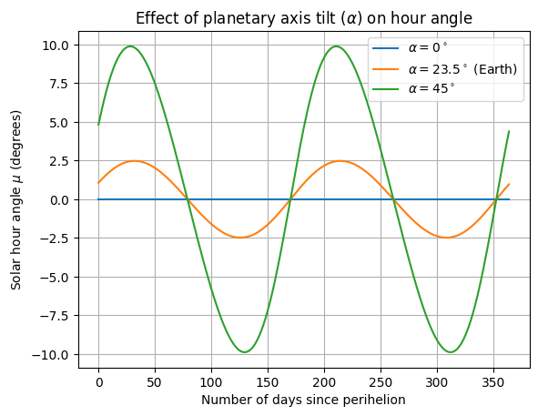
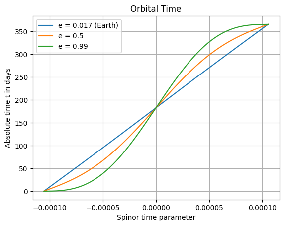
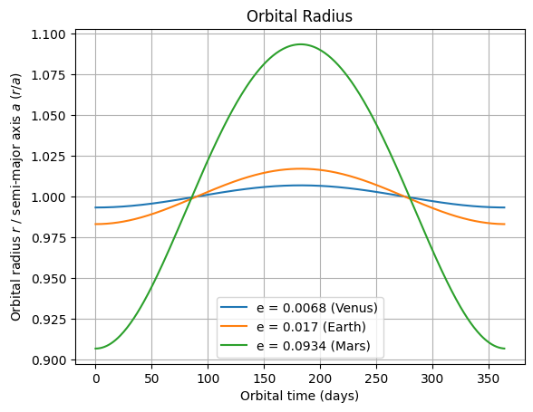
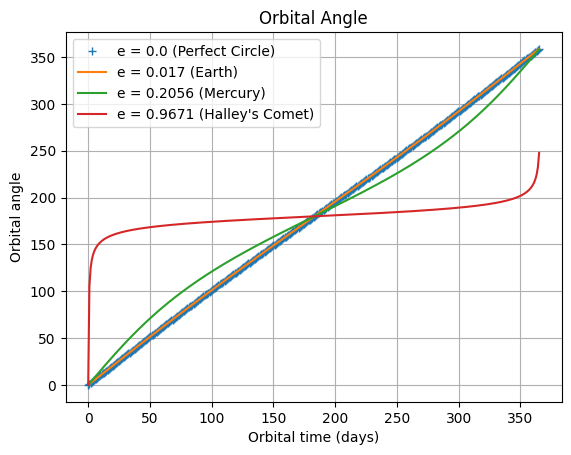
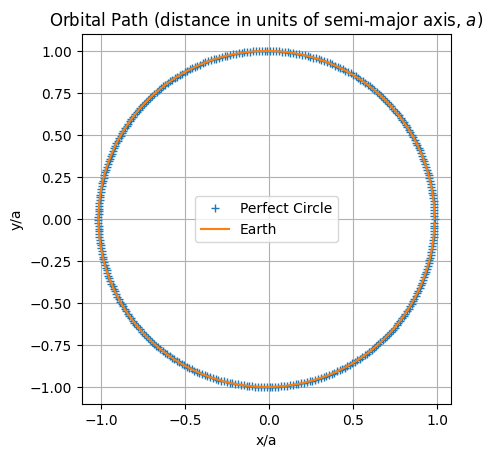
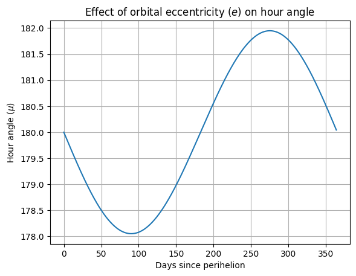
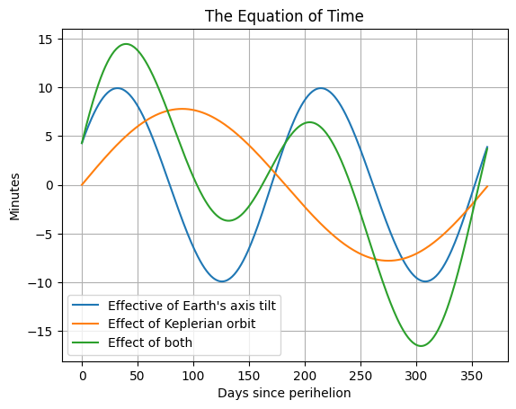

The Equation of Time
import dataclasses, math
import numpy as np
from numpy import sin, cos
import matplotlib.pyplot as plt
The "Equation of Time" refers to the observed difference between a given time, say noon UTC, and the time at which the sun is directly overhead. This phenomenon is due to two effects; the tilt of the Earth's axis \(\alpha\), and the elliptical nature of the Earth's orbit around the sun owing to a non-zero eccentricity \(e\):
 .
.
We will need several constants relating to the Earth's orbit
pi = math.pi
@dataclasses.dataclass
class EotConstants:
N : float = 365.2422 # number of mean days in a year
T_d : int = 24 * 3600 # number of seconds in a mean day
T_y : int = N * T_d # number of seconds in a mean year
om_y : float = 2*pi / T_y # mean angular speed of the earth's centre of mass in its orbit
om_d : float = 2*pi / T_d # angular speed of a point on the earth about the earth's centre of mass
om_sd : float = (N+1) / N * om_d # angular speed of a point on an earth that revolves once per siderial day
T_sd : float = N / (N+1) * T_d # number of seconds in a siderial day
rho : float = 12.25 / 180 * pi # angle between axes of the ellipse and the equinoxes / solstices
alpha : float = 23.5 / 180 * pi # inclination of the earths axis of rotation
a : float = 149598000000 # earth-sun orbit semi-major axes length in metres
e : float = 0.017 # eccentricity of the earth-sun orbit
Om : float = pi / T_y * a # angular speed parameter used in spinor orbit formalism ( = om_y / 2 * a )
C = EotConstants()
# start time at perihelion, sample once per mean day
t_integers = np.arange(int(C.N))
t = C.T_d * t_integers
print(f"t has {len(t)} times from {t[0]} to {t[-1]} seconds")
t has 365 times from 0 to 31449600 seconds
So, the variable \(t\) is our timeline, sampling one year at (mean) daily intervals.
The hour angle formula derived in the sundial calculation has inputs:
- \(\sigma(t)\) - the progress of Earth on its orbit
- \(\psi(t)\) - the spin of the Earth
- \(\alpha\) - the tilt of the Earth's axis
Start by modeling \(\sigma(t)\) and \(\psi(t)\) linearly to isolate the effect of \(\alpha\).
def hour_angle(alpha, sigma, psi, iota_minus_theta = np.nan):
if np.isnan(iota_minus_theta):
iota_minus_theta = 0.0
tanMuY = sin(psi)*cos(sigma)*cos(alpha) - cos(psi)*sin(sigma)
term1 = cos(psi)*cos(sigma)*cos(alpha) + sin(psi)*sin(sigma)
tanMuX = term1*cos(iota_minus_theta) - cos(sigma)*sin(alpha)*sin(iota_minus_theta)
return np.arctan2( tanMuY, tanMuX )
# psi increases linearly with time, one complete revolution after one siderial day,
# and an offset of rho
psi = np.mod(C.rho + C.om_sd*t, 2*pi)
# Increase sigma at constant rate of 2*pi per solar year to isolate effect of alpha.
# Orbit (phi) starts at perihelion which is C.rho degrees past -e_1
# and sigma starts at +e_1 which is pi radians away from -e_1, hence pi + C.rho.
sigma = np.mod(pi + C.rho + C.om_y*t, 2*pi)
# calc hour angle
mu = np.mod(hour_angle(C.alpha, sigma, psi), 2*pi)
mu0 = np.mod(hour_angle(0, sigma, psi), 2*pi)
mu45 = np.mod(hour_angle(45 / 180 * pi, sigma, psi), 2*pi)
def s2d(seconds):
"Convert seconds to days"
return seconds / 24 / 3600
def r2d(radians):
"Convert radians to degrees"
return radians / pi * 180
fig, ax = plt.subplots()
ax.plot( s2d(t), r2d(pi - mu0), label=r"$\alpha = 0^\circ$" )
ax.plot( s2d(t), r2d(pi - mu), label=r"$\alpha = 23.5^\circ$ (Earth)" )
ax.plot( s2d(t), r2d(pi - mu45), label=r"$\alpha = 45^\circ$" )
ax.legend()
ax.grid()
ax.set_xlabel( 'Number of days since perihelion' )
ax.set_ylabel( 'Solar hour angle $\mu$ (degrees)' )
ax.set_title( r'Effect of planetary axis tilt ($\alpha$) on hour angle' )
Text(0.5, 1.0, 'Effect of planetary axis tilt ($\\alpha$) on hour angle')

Orbital Time
Now to introduce Keplerian dynamics and change the model for \(\sigma(t)\). The orbit \((r(t), \phi(t))\) can be parameterized as \(r(s)\), \(\phi(s)\) and \(t(s)\) as derived in the appendix of my paper, just quoted here. Starting with \(t(s)\):
def _kepler_params(C = EotConstants(), e = None):
a = C.a
if not e:
e = C.e
b = a*math.sqrt(1-e**2) # semi-minor axis
A = math.sqrt((a+b)/2)
B = math.sqrt((a-b)/2)
return A, B, C.Om, C.T_y
def orbital_time( s, C = EotConstants(), e = None ):
"Calculate orbital time given time parameter, t(s)"
A, B, Om, T_y = _kepler_params(C, e)
return (A**2+B**2)*s + A*B/Om*sin(2*Om*s) + T_y/2
s_vector = np.linspace(-pi/C.Om/2, pi/C.Om/2, 365)
t_vector = orbital_time(s_vector)
t_vector_eccentric = orbital_time(s_vector, C, e=0.5)
t_vector_very_eccentric = orbital_time(s_vector, C, e=0.99)
fig, ax = plt.subplots()
ax.plot( s_vector, s2d(t_vector), label=f"e = {C.e} (Earth)" )
ax.plot( s_vector, s2d(t_vector_eccentric), label=f"e = {0.5}" )
ax.plot( s_vector, s2d(t_vector_very_eccentric), label=f"e = {0.99}" )
ax.legend()
ax.grid()
ax.set_xlabel( 'Spinor time parameter' )
ax.set_ylabel( 'Absolute time t in days' )
ax.set_title("Orbital Time")
Text(0.5, 1.0, 'Orbital Time')

Invert the time relation
In order to calcuate \(r(t) = r(t(s))\) and \(\phi(t) = \phi(t(s))\), we need invert the functional form for \(t(s)\). Given its monotonic nature, we can use interpolation:
# get at least 4 SF of accuracy in the inversion with 10k points
s_finegrained = np.linspace(-pi/C.Om/2, pi/C.Om/2, 10_000)
# Cache interpolation points, one per eccentricity, using first 4 digits
def _key(e):
return int(10_000*e)
t_finegrained = {_key(C.e):orbital_time(s_finegrained)}
def spinor_time(t, C = EotConstants(), e=None):
if not e:
e = C.e
k = _key(e)
if k not in t_finegrained.keys():
t_finegrained[k] = orbital_time(s_finegrained, C, e)
return np.interp(t, t_finegrained[k], s_finegrained)
assert len(t_finegrained) == 1
t_eval = 50 * 24*3600 # evaluate 50 days into orbit
s1 = spinor_time(t_eval)
assert math.isclose(t_eval, orbital_time(s1), rel_tol=1e-9) # round trip
assert len(t_finegrained) == 1 # hit the existing cache of t values
e99 = 0.99 # very eccentric
s2 = spinor_time(t_eval, C, e99)
assert len(t_finegrained) == 2 # create new cache of t values
assert not math.isclose(s1, s2, abs_tol=1e-5) # different e means different s
assert math.isclose(t_eval, orbital_time(s2, C, e99), rel_tol=1e-7) # round trip
Orbital Radius
Although not necessary to calculate the equation of time, for completeness let's look at the radial coordinate (from the orbit's focus) over time also:
def orbital_radius(s, C = EotConstants(), e = None):
"Calculate orbital radial coordinate given spinor time parameter, r(s)"
A, B, Om, _ = _kepler_params(C, e)
return A**2 + B**2 + 2*A*B*cos(2*Om*s)
e_venus = 0.0068
e_mars = 0.0934
t_days = t/3600/24
orb_rad_ratio_venus = orbital_radius(spinor_time(t, C, e_venus), C, e_venus)/C.a
orb_rad_ratio_earth = orbital_radius(spinor_time(t))/C.a
orb_rad_ratio_mars = orbital_radius(spinor_time(t, C, e_mars), C, e_mars)/C.a
fig, ax = plt.subplots()
ax.plot( t_days, orb_rad_ratio_venus, label=f"e = {e_venus} (Venus)" )
ax.plot( t_days, orb_rad_ratio_earth, label=f"e = {C.e} (Earth)" )
ax.plot( t_days, orb_rad_ratio_mars, label=f"e = {e_mars} (Mars)" )
ax.legend()
ax.grid()
ax.set_xlabel("Orbital time (days)")
ax.set_ylabel("Orbital radius $r$ / semi-major axis $a$ ($r/a$)")
ax.set_title("Orbital Radius")
Text(0.5, 1.0, 'Orbital Radius')

Orbital Angle
The angle of the orbit (again in radial coordinates with origin at the orbit's focus) varies non-linearly with time for an elliptical orbit, and this provides the second component of the Equation of Time.
def orbital_angle(s, C = EotConstants(), e = None):
"Calculate orbital angular coordinate given time parameter, phi(s)"
A, B, Om, _ = _kepler_params(C, e)
tanSigY = ( (A**2-B**2)*sin(2*Om*s) )
tanSigX = ( (A**2+B**2)*cos(2*Om*s) + 2*A*B )
return np.arctan2( tanSigY, tanSigX ) + pi
e_circle = 0.0
e_mercury = 0.2056
e_halleys_comet = 0.9671
t_days = t_vector/3600/24
orb_angle_circle = orbital_angle(spinor_time(t, C, e_circle), C, e_circle)
orb_angle_earth = orbital_angle(spinor_time(t))
orb_angle_mercury = orbital_angle(spinor_time(t, C, e_mercury), C, e_mercury)
orb_angle_halleys_comet = orbital_angle(spinor_time(t, C, e_halleys_comet), C, e_halleys_comet)
fig, ax = plt.subplots()
ax.plot( t_days, r2d(orb_angle_circle), "+", label=f"e = {e_circle} (Perfect Circle)" )
ax.plot( t_days, r2d(orb_angle_earth), label=f"e = {C.e} (Earth)" )
ax.plot( t_days, r2d(orb_angle_mercury), label=f"e = {e_mercury} (Mercury)" )
ax.plot( t_days, r2d(orb_angle_halleys_comet), label=f"e = {e_halleys_comet} (Halley's Comet)" )
ax.legend()
ax.grid()
ax.set_xlabel("Orbital time (days)")
ax.set_ylabel("Orbital angle")
ax.set_title("Orbital Angle")
Text(0.5, 1.0, 'Orbital Angle')

Orbital Path
Again, not necessary for the Equation of Time, but for completeness, let's look at the Earth's orbital path:
def orbit_path(s, C = EotConstants(), e = None):
return (orbital_radius(spinor_time(t, C, e), C, e)*cos(orbital_angle(spinor_time(t, C, e), C, e)) / C.a,
orbital_radius(spinor_time(t, C, e), C, e)*sin(orbital_angle(spinor_time(t, C, e), C, e)) / C.a)
path_earth = orbit_path(spinor_time(t))
path_circle = orbit_path(spinor_time(t, C, e_circle), C, e_circle)
fig, ax = plt.subplots()
ax.plot(*path_circle, "+", label="Perfect Circle")
ax.plot(*path_earth, label="Earth")
ax.grid()
ax.set_aspect("equal", "box")
ax.legend()
ax.set_xlabel("x/a")
ax.set_ylabel("y/a")
ax.set_title("Orbital Path (distance in units of semi-major axis, $a$)")
Text(0.5, 1.0, 'Orbital Path (distance in units of semi-major axis, $a$)')

Effect of Orbital Eccentricity
We can isolate the effect of a Keplerian orbit by setting the Earth's axis tilt angle \(\alpha\) to zero:
# now account for orbit in rate of increase of sigma
sigma = np.mod(pi + C.rho + orbital_angle(spinor_time(t)), 2*pi)
mu = np.mod(hour_angle(0.0, sigma, psi), 2*pi)
fig, ax = plt.subplots()
ax.plot(s2d(t), r2d(mu))
ax.grid()
ax.set_xlabel("Days since perihelion")
ax.set_ylabel("Hour angle ($\mu$)")
ax.set_title("Effect of orbital eccentricity ($e$) on hour angle")
Text(0.5, 1.0, 'Effect of orbital eccentricity ($e$) on hour angle')

Equation of Time
Finally, we can combine both effect and plot the Equation of Time for Earth.
sigma_alpha_only = np.mod(pi + C.rho + C.om_y*t, 2*pi)
mu_alpha_only = np.mod(hour_angle(C.alpha, sigma_alpha_only, psi), 2*pi)
sigma_eot = np.mod(pi + C.rho + orbital_angle(spinor_time(t)), 2*pi)
mu_e_only = np.mod(hour_angle(0.0, sigma_eot, psi), 2*pi)
mu_eot = np.mod(hour_angle(C.alpha, sigma_eot, psi), 2*pi)
fig, ax = plt.subplots()
# 1 degree is 4 minutes if 360 degrees is 24 hours
ax.plot(s2d(t), 4*r2d(pi - mu_alpha_only), label="Effective of Earth's axis tilt")
ax.plot(s2d(t), 4*r2d(pi - mu_e_only), label="Effect of Keplerian orbit")
ax.plot(s2d(t), 4*r2d(pi - mu_eot), label="Effect of both")
ax.grid()
ax.legend()
ax.set_xlabel("Days since perihelion")
ax.set_ylabel("Minutes")
ax.set_title("The Equation of Time")
Text(0.5, 1.0, 'The Equation of Time')

Capture the key results from this notebook in the sundial module
from analemma import geometry, orbit
assert orbit.earth.N == C.N
assert orbit.earth.T_d == C.T_d
assert orbit.earth.T_y == C.T_y
assert orbit.earth.om_y == C.om_y
assert orbit.earth.om_d == C.om_d
assert orbit.earth.om_sd == C.om_sd
assert orbit.earth.T_sd == C.T_sd
assert orbit.earth.rho == C.rho
assert orbit.earth.alpha == C.alpha
assert orbit.earth.a == C.a
assert orbit.earth.e == C.e
assert orbit.earth.Om == C.Om
assert (geometry.hour_angle(orbit.earth.alpha, sigma, psi) == hour_angle(C.alpha, sigma, psi)).all()
assert (orbit.orbital_time(s_vector, C, e=0.99) == orbital_time(s_vector, C, e=0.99)).all()
assert (orbit.spinor_time(t_eval, C, e99) == spinor_time(t_eval, C, e99)).all()
assert (orbit.orbital_radius(spinor_time(t, C, e_mars), C, e=e_mars)
== orbital_radius(spinor_time(t, C, e_mars), C, e=e_mars)).all()
assert (orbit.orbital_angle(spinor_time(t, C, e_halleys_comet), C, e_halleys_comet)
== orbital_angle(spinor_time(t, C, e_halleys_comet), C, e_halleys_comet)).all()